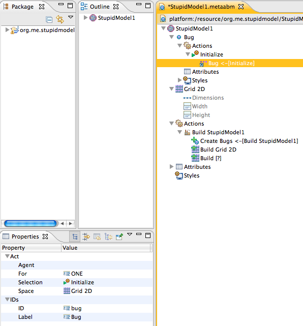
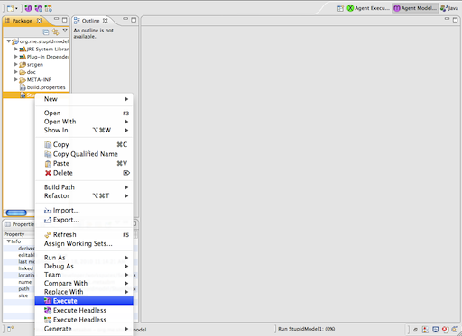

A special Agent Modeling Perspective can be used to setup your Workspace for modeling. Depending on your how you installed the agent modeling tools, you can simply pick the perspective from the choices in the upper-right hand of your workbench:

Or, if you can't see it there, you can access it by selecting the menu '''Open Perspective > Other... and then selecting the Agent Modeling perspective from the provided options:

Before doing anything else, we need a project -- a folder to organize our models within. Right-click in the Package Explorer and select New > Agent Modeling Escape Project.


We'll need a model as well. This is the container for all of the the agents and behaviors we'll be defining. Right-click on the project folder and choose New > Agent Model.

You'll see a model creation wizard from which you can name the model. Just give it the name "StupidModel.metaabm".

Click Next to see some other options. We don't need to change any of this:

So just click the Finish button and we're ready to move on with the tutorial.
Our first step is to create an agent. The root contexts and a number of neccessary model components were already created automatically. So right-click on the root "StupidModel1" context and select Create Member > Agent.

Let's call it "Bug". In the lower left-hand corner you should see the Properties View. This is where you'll edit model values when working with the tree editor. The properties view -- as with any other view--- can be moved anywhere within the workbench and if you can't find it -- or any other views -- you can always lcoate it through Window > Show View > Other. Find the "Label" property and type our new name into it. You'll see that all of the related name properites are also updated.

While we've been making these changes, the modeling framework has also been doing some work behind the scenes. For example, it has created an attribute and a rule to create the agents. Open the Actions node and the Attributes node to see these changes. If we look at the attributes for the model, we can see that an attribute specifying the number of agents has been created called "Bug Count". Select it, then enter "100" as the default value. The default value is the value the model will use if no value is specified anywhere else (like in the parameter launcher).

You might want to take a look at the Create Bugs rule, but there isn't anything we need to change there.

Next, we'll create a grid for the Bugs to move around upon. Right-click on the StupidModel1 context and choose New > Grid.

Now, looking at the properties for the Grid we've just created, we can see that there are a number of properties to set. We want to make a number of changes.
-
Set the space's "Border Rule" property to be "Periodic" -- the edges wrap around from one ege to the other.
-
Set the "Neighborhood" property to be "Moore" -- that's how we are going to interpret the statement "in the X and Y directions".
-
Set the dimenionality to "2". (You might need to enlarge the Property view or use the scroll bar to see the Dimensionality property.)

Again, the framework has taken care of some thigns for us automatically. If we now open the Grid node, we can see that "Width" and "Height" attributes have been created based on the dimensionality we've just defined. We'll set each of them to "100", so that we end up with a 100 x 100 grid. (Which is pretty large for a model of this kind, but we want to go with the basic specification.)

We need to do one other thing to set up the structure. The editor has created behaviors (we call them "Actions") for creating agents, but we need to create an Act to build the grid Habitat members and make it a hospitable (or at least known) space for our bugs. So right-click to create a new Build Grid Act within the <i>Build Stupid Model</i> node within <i>Simple Agent's</i> Actions. (You may need to expand some nodes to get there.)
So, select "Grid 2D" (the only choice) from the Space property.

Then click the ... button next to the "Agents" property and add the Bug agent we created abovve to the Feature list in the dialog.

Now we can make these bugs do something. Let's create our first rule. In this case we're going to create a special Initialize Action that executes once when the model is first created for each agent. All Actions begin from the agent (or style) Actions list and there are only a few Actions that can serve as roots. See the Design section of this guide for much more on that. Open the Bug node by clicking the triangle icon, right-click on the Actions node and select the '''Create Member > Initialize Action.

Next, right click on the new Initialize node and choose Create Member > Select to create a Select target.

Selects are the central building blocks of model actions and define the basis for Query and Logic Actions that can be modified and used in subsequent targets. Targets are actions that "follow from" other actions. With this Select we are going to be searching for places for the Bug to move to at the very start of the model run. Here we need to specify the space we will be looking for cells within, so we set the Space property to "Grid 2D". Normally, we'd specify an agent as well, but as the Grid 2D cells don't have any attributes, we don't need to define them explicitly. So we just need to make sure that the Agent property is null (blank).

Next, we create a Query Action. A query is really a query term; we're specifying some aspect of the search that we're interested in.

In this case we want a special kind of query, a query within space for any agents that are available; that is unoccupied by another agent. So we select "Spatial: Available" form the drop down list of query functions.

Finally, as the last part of the initial action specification, we'll create a Move Action using Create Member > Move. (Not shown.) The properties should be correct, but check to make sure that the selection property is "Initialize" (the root), and the destination property is "Bug" (the Select Action we've defined above). Like this:

That's all we have to do to create our first working model! Now, go to the Package Explorer and select the StupidModel1.metaabm file. Right-click on it and select Execute. Or click on the first "m" button in the toolbar. (Again, we've simplified the toolbar for this tutorial, so you may have more buttons appearing then we're showing here.

A new perspective for "Agent Execution" will automatically open up and you can see that the agents have placed themselves in the grid. They don't do anything else yet.

While Escape assigns a default color of black for the agents, we'll want something more interesting -- so let's make the Bugs red. Agent visualization is accomplished using the same mechanism as ordinary agent rules. So first, let's create a new Style. Right click on the "Styles" node and select '''

By default the style will be called BugStyle2D. Open the Style to the Actions node and create a rule.

Now we need to create a series of evaluations. An Evaluation is like a Query in that it performs some kind of function in the broadest sense, but unlike a Query, it does not affect whether target (downstream) Acts are performed. For Styles we have a set of Graphic functions that we will chain together to draw a figure. First we create the Evaluation.
We make the first Evaluation define a Color of "Red". Right click on the new Rule, and select New > Command > Evaluate (not shown) to create an Evaluation. Then in the function property, select "Graphic: Color Red".

We'll create two more evaluation targets. Right-click on the "Color Red" evaluation and create an Evaluation. Pick the "Graphic: Draw Oval" fill. For the last part of our style, we need to actually draw the figure. To do this we create a last Evaluation target for "Draw Oval" and give it the "Graphic: Fill Shape" function. By now it should be clear how to do this. "Fill" or "Outline" will always come last in a chain of graphic evaluations, but otherwise the order shouldn't matter. See the Demographic Prisoner's Dilemma model for an example of how this can be used to selectively pick Colors and or Shapes. You should end up with something like this:

To make our agents move randomly every iteration, we will create a Rule. (For those familiar with Repast or other scheduling oriented AM platforms, a rule is just a schedule that gets activated each and every period for all agents.) At this point in the tutorial, we'll show screenshots only for aspects of the modeling process that haven't already been covered.
The first part of the Bug Rule is exactly the same as the Initialize rule. We'll make the Select statement "Agent" property blank, as we want to move to a cell. As before, we want to make sure the Cell is free before we try to move in, so we'll select a "Spatial: Available" Query function.(By the way, to make scrolling through the list easier, you can type the first letters of the selection, in this case "SP".)
But now, instead of moving <i>anywhere</i> we want to move nearby. So now, we create a parallel or "sibling" Query from the same Select root. Because this new Query Action is a child of the Select Action and not the "Space Available" Query we've just created, we'll right-click on the Select Action and choose Create Target > Select > Query. Like so:

Often, we would pick the "Spatial: Neighbor" function to take a random walk, but according to the specification, we actually want to move into some random Cell within distance four (4). So we will pick "Spatial: Within" from the list of functions. Instead of specifying the actual distance now, let's see how the Agent Modeling Framework error checking capabilities can help us in model development. Save the model by selecting File > Save from the application menu.
<p>You should see an error message.
<img src="images/tutorials/stupidmodel1/ErrorChecking/ErrorMessage.jpg" alt="" />
<p>Over in the Package Explorer (file list) you can see that the .metaabm file has been marked with an error
symbol.</p>
<img src="images/tutorials/stupidmodel1/ErrorChecking/ProblemView.png" alt="" />
<p>Double-click on the problem marker and the offending item will be highlighted.</p>
<img src="images/tutorials/stupidmodel1/ErrorChecking/HighlightedError.jpg" alt="" /> <span class="info">
<p>In addition to error markers, metaABM provides warnings designed to help you avoid common design mistakes.
For example, a warning will be issued if you attempt to move an agent from its selection to the same selection; this
is not strictly speaking an error, but it doesn't make much sense. Notice that the Demographic Prisonner's Dilemma
model has a warning marker, this is because we are happy with the default values for the attributes and didn't
provide any.</p>
</span> <span class="note">You might also notice a number of Java warnings. By default the Eclipse IDE is very
conservative when it comes to warnings, and expects the usage of language constructs that we choose not to use. A
full discussion of all of this is beyond the scope of the tutorial, but see the Eclipse documentation on problem
views for more ideas about how to customize these views.</span>
<li class="arrow1">
<p>Returning to our model, we need a cell that is <i>both</i> Available and Within 4. To accomplish this,
metaABM supports Logical Acts which control how various Queries work together. So create an All Act as a target of
the Spatial Available Query.</p>
<img src="images/tutorials/stupidmodel1/BugRandomMovement/CreateAllTarget_75.jpg" alt="" /></li>
<li class="arrow1">
<p>Now for an interesting issue. Option-Drag the All node to <i>also</i> be a target of the Spatial Within Act.
(This is a copy and drag action -- the same one you would use to copy a file from one directory to another without
removing it form the original location. Depending on your OS, you may need to use the ALT or SHIFT key to accomplish
this.)</p>
<img src="images/tutorials/stupidmodel1/BugRandomMovement/CopyAll_75.jpg" alt="" /></li>
<li class="arrow1">
<p>We can then create a Target movement just as we did for the Initialize method above. But now as we have
defined parallel but Logically linked Acts the same Move node shows up in our hierarchical editor twice!</p>
<span class="note">This is probably a bit confusing for new users, but it is one of the aspects of the
metaABM design that provides efficient behavior representation. Supporting tools such as the Metascape IDE
Visualizer provide other ways to explore more complex Act structures.</span> <img
src="images/tutorials/stupidmodel1/BugRandomMovement/MoveFromAll_75.jpg" alt="" /></li>
<li class="arrow1">
<p>Now we just need to assign a value for search distance. We <i>could</i> simply create a literal for the
Spatial: Within Query but that isn't really god practice. (In fact, originally metaABM didn't allow any literals,
but that began to seem a little too hard-headed.) So we will create our first Attribute. In this case, we want the
Attribute to belong to Simple Model as it will be the same value for all Agents for now. So right-click on Simple
Agent: Attributes and create a new one.</p>
<img src="images/tutorials/stupidmodel1/BugRandomMovement/CreateBugVision_75.jpg" alt="" /></li>
<li class="arrow1">
<p>Name the Attribute -- "Bug Vision" seems descriptive -- give it a type of Integer, and assign it a default
value of 4. This will allow most ABM platforms to provide the ability to change vision at runtime or through batch
definitions, something we couldn't do if we had used a literal value.</p>
<img src="images/tutorials/stupidmodel1/BugRandomMovement/DefineBugVision_75.jpg" alt="" /></li>
<li class="arrow1">
<p>Finally, we assign the Vision attribute to the "Input" node in our Spatial: Within Query.</p>
<img src="images/tutorials/stupidmodel1/BugRandomMovement/SetWithinBugVision_75.jpg" alt="" /></li>
<hr />
<p style="text-align: right"><a name="run" shape="rect" /><a href="#top" shape="rect">contents</a></p>
<h3>Run Final Model</h3>
<li class="arrow1">
<p>And here is our final model! Not looking much different in a snapshot, but those agents should now be moving
around.</p>
<img src="images/tutorials/stupidmodel1/RunModel/RunFinalModel_75.jpg" alt="" /></li>
<li class="arrow1">
<p>We have built a complete Ascape model from our metaABM model. But that's not all -- we also have a complete
Repast model! We will leave this as an exercise -- you can simply follow the directions in the example model section
on Demographic Prisoner's Dilemma.</p>
<span class="info">If you get completely stuck, SimpleModel1 is available in <a href="../downloads/models/StupidModel1.metaabm">model downloads</a>.</span>
<h4>That's all for Now</h4>
<p>We hope these "Getting Started" has enabled you to get up and running and given you some familiarity with the
basic metaABM approach. Upcoming articles will explore metaABM model design in more depth and provide a complete
Stupid Model implementation. Technical Articles will provide more explanation of the theoretical and practical
decisions that went into metaABM.</p>
</li>